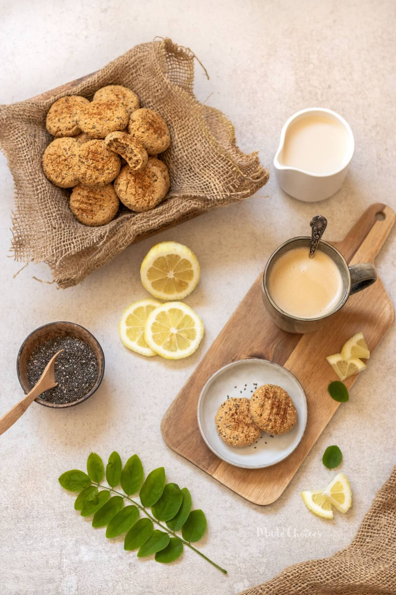

<meta charset='utf-8' />
<style>
img { max-height: 50vh;}
</style>

<article class="h-recipe">
  <h1 class="p-name">Bolachas de limão e chia</h1>

  

  <p>
    Demora <time class="dt-duration" datetime="30M">30 minutos</time>,
    serve <data class="p-yield" value="18">18 bolachas</data>.
  </p>

  <h2>Ingredientes</h2>
  <ul>
    <li class="p-ingredient">200 g de farinha de aveia (ou outra farinha)</li>
    <li class="p-ingredient">50 g de açucar</li>
    <li class="p-ingredient">10&mdash;20 g de sementes de chia</li>
    <li class="p-ingredient">4 g de fermento</li>
    <li class="p-ingredient">raspas de um limão</li>
    <li class="p-ingredient">pitada de sal</li>
    <li class="p-ingredient">60 ml de bebida vegetal (leite?)</li>
    <li class="p-ingredient">30 ml de sumo de limão</li>
    <li class="p-ingredient">30 ml de azeite</li>
  </ul>

  <h2>Instruções</h2>
  <div class="e-instructions">
    <ol>
      <li>Pre-aquecer o forno a 180°C.</li>
      <li>No recipiente misturar todos os ingredientes secos.</li>
      <li>Juntar os ingredientes líquidos.</li>
      <li>Envolver tudo até ficar uma massa moldável.</li>
      <li>Deixar repousar 10 minutos para absorver a humidade.</li>
      <li>Fazer bolinhas de 1 tbsp e dispor no tabuleiro, achatando com um garfo.</li>
      <li>Opcional: polvilhar com mais raspas de limão e açucar.</li>
      <li>Levar ao forno por 15 a 20 minutos, ou até dourar.</li>
      <li>Deixar arrefecer e guardar num frasco de vidro hermético.</li>
    </ol>
  </div>

  <p>Original de <a href="https://madebychoices.pt/bolachas-de-limao-e-chia/?fbclid=IwAR3HFw1j7g_ZDqSvcrv3gcbjHfxNvXe6ifxpKhDAzV8Z0e68Auz3wOQD0DM">Made by choices</a></p>

  <section>
    <h1>Notas</h1>

    <p><time datetime="2020-04-30">30 de abril de 2020</time></p>

    <p>
      Usei açucar normal, e fiz bolinhas muito grandes. Só consegui fazer 16.
      Usei as 20 g de chia, zero sal. Têm um sabor qualquer muito forte. São um
      bocado crumbly.
    </p>
  </section>
</article>
